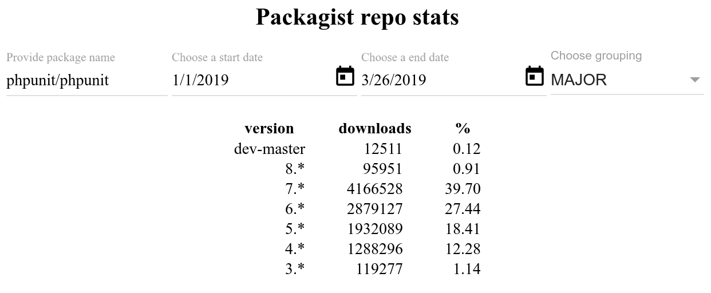

Kuba Werłos
Wprowadzenie do
PHPUnit
Po co piszemy testy automatyczne?
- Ułatwiają utrzymywanie kodu.
- Ułatwiają tworzenie nowych funkcjonalności.
- Jesteśmy pewni czy nasz kod działa tak jak tego oczekujemy.
- Stworzone przed implementacją pozwalają na szybsze uzyskanie poprawnej implementacji.
- Pozwalają na bezpieczne optymalizowanie i refaktoryzację kodu.
- Ułatwiają wdrożenie nowej osoby do zespołu.
Given–When–Then
to styl pisania przypadków testowych.
- Given: aplikacja jest w danym kontekście.
- When: gdy następuje akcja testowa.
- Then: wtedy powinny wystąpić pewne obserwowalne rezultaty.
Przykład:
- Given there are 20 cucumbers
- When I eat 5 cucumbers
- Then I should have 15 cucumbers
PHPUnit
to narzędzie do pisania testów jednostkowych automatycznych.
Autorem jest Sebastian Bergmann i kontrybutorzy.
Pierwsza wersja została wydana w 2004 roku.
Według packagist.org został zainstalowany 117 milionów razy.
Instalacja
Jako zależność projektu:
composer require --dev phpunit/phpunit
./vendor/bin/phpunit --version
(lokalnie lub globalnie)
Ściągając plik PHAR:
wget https://phar.phpunit.de/phpunit-8.0.phar
php phpunit-8.0.phar --version
Wersje
| PHPUnit | PHP |
|---|---|
| ^4.0 | 5.3+ |
| ^5.0 | 5.6+ |
| ^6.0 | 7.0+ |
| ^7.0 | 7.1+ |
| ^8.0 | 7.2+ |
Statystyki
Konfiguracja
phpunit.xml[.dist]
<?xml version='1.0' encoding='UTF-8'?>
<phpunit xmlns:xsi='http://www.w3.org/2001/XMLSchema-instance'
xsi:noNamespaceSchemaLocation='vendor/phpunit/phpunit/phpunit.xsd'
verbose='true'
>
<testsuites>
<testsuite name='all'>
<directory>tests</directory>
</testsuite>
</testsuites>
</phpunit>
Konfiguracja
<?xml version='1.0' encoding='UTF-8'?>
<phpunit backupGlobals='false'
bootstrap='./vendor/autoload.php'
cacheResult='true'
cacheResultFile='.phpunit.result.cache'
columns='80'
enforceTimeLimit='false'
executionOrder='default'
forceCoversAnnotation='false'
processIsolation='false'
stopOnFailure='false'
>
</phpunit>
Korzystanie
- Uruchomienie z podaniem pliku konfiguracyjnego:
phpunit -c tests/configuration-for-ci-server.xml - Tylko jeden zestawu testów:
phpunit --testsuite Unit - Testy z danej ścieżki:
phpunit tests/MyModule/MyFeatureTest.php - Pojedynczy test:
phpunit tests/MyFeatureTest.php --filter testSomething
Budowa testu
Nazwa musi zaczynać się od „test” lub posiadać adnotację „@test”.
final class MyService
{
public function getName() { /* ... */ }
public function getCalculation() { /* ... */ }
}
Budowa testu
final class MyServiceTest extends TestCase
{
public function testGetName() { /* ... */ }
public function testGetCalculation() { /* ... */ }
}
final class MyServiceTest extends TestCase
{
/**
* @test
*/
public function getName() { /* ... */ }
/**
* @test
*/
public function getCalculation() { /* ... */ }
}
Budowa testu
- Klasa z testami musi dziedziczyć po PHPUnit\Framework\TestCase.
- Funkcja testu musi być publiczna.
- Przydatne metody klasy PHPUnit\Framework\TestCase:
- setUpBeforeClass – przed pierwszym testem w klasie,
- setUp – przed każdym testem w klasie,
- tearDown – po każdym testem w klasie,
- tearDownAfterClass – po ostatnim teście w klasie.
Data providers
final class MyConverterTest extends TestCase
{
public function testEmptyInput() { /* ... */ }
public function testNumberInput() { /* ... */ }
public function testSingleCharacterInput() { /* ... */ }
public function testLongStringInput() { /* ... */ }
}
Data providers
final class MyConverterTest extends TestCase
{
/**
* @dataProvider provideConversionCases
*/
public function testConversion($expected, $input) { /* ... */ }
public function provideConversionCases()
{
return [
'empty input' => [ /* ... */ ],
'number input' => [ /* ... */ ],
'single character input' => [ /* ... */ ],
'long string input' => [ /* ... */ ],
];
}
}
Asercje
PHPUnit posiada ponad 100 asercji, między innymi:
- assertTrue
- assertFalse
- assertSame
- assertGreaterThanOrEqual
- assertContainsOnlyInstancesOf
- assertJsonStringEqualsJsonFile
- ...
Asercje
final class MyServiceTest extends TestCase
{
public function testSomething()
{
/* ... */
$this->assertTrue($value);
static::assertTrue($value);
Assert::assertTrue($value);
assertTrue($value);
}
}
Asercje
final class MyServiceTest extends TestCase
{
public function testSomething1()
{
/* ... */
$this->assertSame($expected, $actual, 'Values are different');
}
public function testSomething2()
{
/* ... */
$this->assertJsonStringEqualsJsonFile($expected, $actual);
}
}
Testowanie wyjątków
final class MyServiceTest extends TestCase
{
public function testInvalidType()
{
$service = new MyService();
$this->expectException(CustomException::class);
$this->expectExceptionCode(418);
$this->expectExceptionMessage('Not allowed type');
$service->convert(-10);
}
}
Makiety
(ang. test doubles)
Używamy ich zamiast prawdziwego obiektu podczas testów.
Wyróżniamy 5 typów.
Dummy
Ma zastosowanie gdy od obiektu nie oczekujemy niczego.
Zazwyczaj jest używany do uzupełnienia list argumentów.
$this->createMock(LoggerInterface::class);
Stub
Używany jest wtedy gdy potrzebujemy konkretnych wartości dla testu.
$animal = $this->createMock(Animal::class);
$animal
->method('numberOfLegs')
->willReturn(100);
Fake
Posiada działającą implementację, zwykle uproszczoną w celu uniknięcia efektów ubocznych (np. InMemoryTestDatabase).
$fruit = $this->createMock(FruitInterface::class);
$fruit->method('getColour')
->willReturnCallback(function ($fruit) {
$colours = ['apple' => 'red', 'banana' => 'yellow'];
if (isset($colours[$fruit])) {
return $colours[$fruit];
}
return 'unknown';
});
Spy
Używany gdy potrzebujemy zebrać informacje co się dzieje
z makietą podczas testu.
$sentMessages = [];
$logger = $this->createMock(MessageSender::class);
$logger->method('send')
->willReturnCallback(function ($message) use (&$sentMessages) {
$sentMessages[] = $message;
});
Mock
Oprócz tego co robią poprzednie makiety dodatkowo określa oczekiwania przed wykonaniem testu.
$animal = $this->createMock(Animal::class);
$animal
->expects($this->once())
->method('feed')
->with('Meat');
Makiety
Makieta zwracająca makietę najprawdopodobniej wskazuje,
że zależności nie są prawidłowo zdefiniowane
(Prawo Demeter).
Słowo „mock” w kontekście PHPUnit oznacza makietę
i tylko od nas zależy jak jej użyjemy.
Co testujemy?
Poprawne rezultaty
$validator = new Validator();
assertTrue($validator->isValid('fineValue'));
assertFalse($validator->isValid('invalidValue'));
Co testujemy?
Niezmienniki – struktura
$shoppingCart = new ShoppingCart();
$shoppingCart->addProduct(new Product('book'), 1);
$shoppingCart->addProduct(new Product('game'), 1);
$productsList = $shoppingCart->getProductsList();
assertEquals(new Product('book'), productsList->getAtPosition(1));
assertEquals(new Product('game'), $productsList->getAtPosition(2));
Co testujemy?
Niezmienniki – logika
$shoppingCart = new ShoppingCart();
$shoppingCart->addProduct(new Product('book'), 2);
$shoppingCart->addProduct(new Product('book'), 4);
assertSame(6, $shoppingCart->getProductQuantity(new Product('book'));
Co testujemy?
Warunki brzegowe
assertFalse(DateService::isWorkingDay(false));
Co testujemy?
Warunki brzegowe – zgodność z oczekiwanym formatem
$nameForEmailExtractor = new NameForEmailExtractor();
expectException(InvalidEmailException::class);
$nameForEmailExtractor->extract('jan.kowalski!example.com');
Co testujemy?
Warunki brzegowe – czy wartość należy do określonego przedziału
expectException(InvalidLatitudeException::class);
$latitude = new Latitude(90.5);
Pokrycie kodu
- Pokrycie kodu (ang. code coverage) to raport który pokazuje,
co zostało przetestowane. - Aby stworzyć raport pokrycia kodu należy mieć skonfigurowany Xdebug, PHPDBG lub PCOV.
- Należy pamiętać, że liczenie pokrycia kodu jest kosztowne – potrafi kilkukrotnie wydłużyć czas wykonywania się testów.
Pokrycie kodu
<?xml version='1.0' encoding='UTF-8'?>
<phpunit>
<filter>
<whitelist>
<directory>./src</directory>
</whitelist>
</filter>
<testsuites>
<testsuite name='coverage'>
<directory>./tests</directory>
<exclude>./tests/Functional</exclude>
</testsuite>
</testsuites>
<logging>
<log type='coverage-html' target='var/test-report' />
<log type='coverage-text' target='php://stdout' showOnlySummary='true' />
</logging>
</phpunit>
Pokrycie kodu
$ ./vendor/bin/phpunit
PHPUnit 8.0.5 by Sebastian Bergmann and contributors.
Runtime: PHP 7.3.3-1+ubuntu16.04.1+deb.sury.org+1
Time: 42.38 seconds, Memory: 206.50 MB
Tests: 13849, Assertions: 398464.
$ ./vendor/bin/phpunit
Runtime: PHP 7.3.3-1+ubuntu16.04.1+deb.sury.org+1 with Xdebug 2.7.0
Time: 39.61 minutes, Memory: 318.50 MB
Code Coverage: 79.61%
$ phpdbg -qrr ./vendor/bin/phpunit
Runtime: PHPDBG 7.3.3-1+ubuntu16.04.1+deb.sury.org+1
Time: 4.54 minutes, Memory: 432.50 MB
Code Coverage: 79.16%
$ ./vendor/bin/phpunit
Runtime: PHP 7.3.3-1+ubuntu16.04.1+deb.sury.org+1 with PCOV 1.0.0
Time: 1.46 minutes, Memory: 342.50 MB
Code Coverage: 89.73%
Dobre praktyki
- Używajmy najbardziej szczegółowych asercji
- zamiast:
assertTrue(empty($value)); assertTrue(file_exists($file)); - czytelniej jest zastosować:
assertEmpty($value); assertFileExists($file);
Dobre praktyki
- Używajmy assertSame zamiast assertEquals.
- Bądźmy świadomi bezużytecznych testów (beStrictAboutTestsThatDoNotTestAnything).
- Poprawnie nazywajmy klasy testowe (Foo.php → FooTest.php).
- Utrzymujmy tą samą strukturę katalogów i plików dla testów oraz testowanego kodu.
Dobre praktyki
- Używajmy adnotacji @covers przy wyliczaniu pokrycia kodu.
/**
* @covers \MyProject\MyService
*/
final class MyServiceTest extends TestCase
{
/* ... */
}
/**
* @coversNothing
*/
final class MyFunctionalTest extends TestCase
{
/* ... */
}
Dobre praktyki
- Unikajmy – trudnej do powtórzenia – nieprzewidywalności:
public function testSomethingWithCurrentTime() { // poniższa wartość jest przypadkowa $timestamp = time(); }public function testSomethingWithFixedDate() { // poniżej będzie zawsze ten sam dzień $date = date_create_from_format('j-M-Y', '26-Mar-2019'); };
Piszmy testowalny kod!
- Unikajmy singletonów.
- Unikajmy statycznych metod.
- W klasie nie polegajmy ściśle na kodzie innych klas.
- Przestrzegajmy zasadę pojedynczej odpowiedzialności.
- Starajmy się pisać testy przed implementacją funkcjonalności.
- TDD (Test-driven development).
Pomocne narzędzia
- Prophecy (“If I were to create a new mocking framework today it would probably look a lot like Prophecy”).
- ParaTest – pozwala zrównoleglić uruchamianie testów.
- phpunit-speedtrap – pozwala migrować testy do nowszej wersji PHPUnit-a.
- php-invoker – pozwala wymusić limit czasu na test.
- PHP-Mock – pomocne gdy musimy mockować natywne funkcję PHP.
- PHP CS Fixer – pozwala migrować testy do nowszej wersji PHPUnit-a.